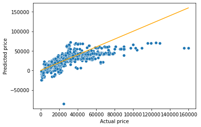
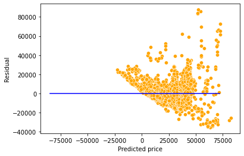

import pandas as pd
import numpy as np
import statsmodels.formula.api as smf
import seaborn as sns
import matplotlib.pyplot as plt2 Multiple Linear Regression
Develop a multiple linear regression model that predicts car price based on engine size, year, mileage, and mpg. Datasets to be used: Car_features_train.csv, Car_prices_train.csv
trainf = pd.read_csv('./Datasets/Car_features_train.csv')
trainp = pd.read_csv('./Datasets/Car_prices_train.csv')
train = pd.merge(trainf,trainp)
train.head()| carID | brand | model | year | transmission | mileage | fuelType | tax | mpg | engineSize | price | |
|---|---|---|---|---|---|---|---|---|---|---|---|
| 0 | 18473 | bmw | 6 Series | 2020 | Semi-Auto | 11 | Diesel | 145 | 53.3282 | 3.0 | 37980 |
| 1 | 15064 | bmw | 6 Series | 2019 | Semi-Auto | 10813 | Diesel | 145 | 53.0430 | 3.0 | 33980 |
| 2 | 18268 | bmw | 6 Series | 2020 | Semi-Auto | 6 | Diesel | 145 | 53.4379 | 3.0 | 36850 |
| 3 | 18480 | bmw | 6 Series | 2017 | Semi-Auto | 18895 | Diesel | 145 | 51.5140 | 3.0 | 25998 |
| 4 | 18492 | bmw | 6 Series | 2015 | Automatic | 62953 | Diesel | 160 | 51.4903 | 3.0 | 18990 |
#Using the ols function to create an ols object. 'ols' stands for 'Ordinary least squares'
ols_object = smf.ols(formula = 'price~year+mileage+mpg+engineSize', data = train)
model = ols_object.fit()
model.summary()| Dep. Variable: | price | R-squared: | 0.660 |
|---|---|---|---|
| Model: | OLS | Adj. R-squared: | 0.660 |
| Method: | Least Squares | F-statistic: | 2410. |
| Date: | Tue, 27 Dec 2022 | Prob (F-statistic): | 0.00 |
| Time: | 01:07:25 | Log-Likelihood: | -52497. |
| No. Observations: | 4960 | AIC: | 1.050e+05 |
| Df Residuals: | 4955 | BIC: | 1.050e+05 |
| Df Model: | 4 | ||
| Covariance Type: | nonrobust |
| coef | std err | t | P>|t| | [0.025 | 0.975] | |
|---|---|---|---|---|---|---|
| Intercept | -3.661e+06 | 1.49e+05 | -24.593 | 0.000 | -3.95e+06 | -3.37e+06 |
| year | 1817.7366 | 73.751 | 24.647 | 0.000 | 1673.151 | 1962.322 |
| mileage | -0.1474 | 0.009 | -16.817 | 0.000 | -0.165 | -0.130 |
| mpg | -79.3126 | 9.338 | -8.493 | 0.000 | -97.620 | -61.006 |
| engineSize | 1.218e+04 | 189.969 | 64.107 | 0.000 | 1.18e+04 | 1.26e+04 |
| Omnibus: | 2450.973 | Durbin-Watson: | 0.541 |
|---|---|---|---|
| Prob(Omnibus): | 0.000 | Jarque-Bera (JB): | 31060.548 |
| Skew: | 2.045 | Prob(JB): | 0.00 |
| Kurtosis: | 14.557 | Cond. No. | 3.83e+07 |
Notes:
[1] Standard Errors assume that the covariance matrix of the errors is correctly specified.
[2] The condition number is large, 3.83e+07. This might indicate that there are
strong multicollinearity or other numerical problems.
The model equation is: estimated car price = -3.661e6 + 1818 * year -0.15 * mileage - 79.31 * mpg + 12180 * engineSize
Predict the car price for the cars in the test dataset. Datasets to be used: Car_features_test.csv, Car_prices_test.csv
testf = pd.read_csv('./Datasets/Car_features_test.csv')
testp = pd.read_csv('./Datasets/Car_prices_test.csv')#Using the predict() function associated with the 'model' object to make predictions of car price on test (unknown) data
pred_price = model.predict(testf)#Note that the predict() function finds the predictor 'engineSize' in the testf dataframe, and plugs it's values in the regression equation for prediction.Make a visualization that compares the predicted car prices with the actual car prices
sns.scatterplot(x = testp.price, y = pred_price)
#In case of a perfect prediction, all the points must lie on the line x = y.
sns.lineplot(x = [0,testp.price.max()], y = [0,testp.price.max()],color='orange') #Plotting the line x = y.
plt.xlabel('Actual price')
plt.ylabel('Predicted price')Text(0, 0.5, 'Predicted price')
The prediction looks better as compared to the one with simple linear regression. This is because we have four predictors to help explain the variation in car price, instead of just one in the case of simple linear regression. Also, all the predictors have a significant relationship with price as evident from their p-values. Thus, all four of them are contributing in explaining the variation. Note the higher values of R2 as compared to the one in the case of simple linear regression.
What is the RMSE of the predicted car price?
np.sqrt(((testp.price - pred_price)**2).mean())9956.82497993548What is the residual standard error based on the training data?
np.sqrt(model.mse_resid)9563.74782917604sns.scatterplot(x = model.fittedvalues, y=model.resid,color = 'orange')
sns.lineplot(x = [pred_price.min(),pred_price.max()],y = [0,0],color = 'blue')
plt.xlabel('Predicted price')
plt.ylabel('Residual')Text(0, 0.5, 'Residual')
Will the explained variation (R-squared) in car price always increase if we add a variable?
Should we keep on adding variables as long as the explained variation (R-squared) is increasing?
#Using the ols function to create an ols object. 'ols' stands for 'Ordinary least squares'
np.random.seed(1)
train['rand_col'] = np.random.rand(train.shape[0])
ols_object = smf.ols(formula = 'price~year+mileage+mpg+engineSize+rand_col', data = train)
model = ols_object.fit()
model.summary()| Dep. Variable: | price | R-squared: | 0.661 |
|---|---|---|---|
| Model: | OLS | Adj. R-squared: | 0.660 |
| Method: | Least Squares | F-statistic: | 1928. |
| Date: | Tue, 27 Dec 2022 | Prob (F-statistic): | 0.00 |
| Time: | 01:07:38 | Log-Likelihood: | -52497. |
| No. Observations: | 4960 | AIC: | 1.050e+05 |
| Df Residuals: | 4954 | BIC: | 1.050e+05 |
| Df Model: | 5 | ||
| Covariance Type: | nonrobust |
| coef | std err | t | P>|t| | [0.025 | 0.975] | |
|---|---|---|---|---|---|---|
| Intercept | -3.662e+06 | 1.49e+05 | -24.600 | 0.000 | -3.95e+06 | -3.37e+06 |
| year | 1818.1672 | 73.753 | 24.652 | 0.000 | 1673.578 | 1962.756 |
| mileage | -0.1474 | 0.009 | -16.809 | 0.000 | -0.165 | -0.130 |
| mpg | -79.2837 | 9.338 | -8.490 | 0.000 | -97.591 | -60.976 |
| engineSize | 1.218e+04 | 189.972 | 64.109 | 0.000 | 1.18e+04 | 1.26e+04 |
| rand_col | 451.1226 | 471.897 | 0.956 | 0.339 | -474.004 | 1376.249 |
| Omnibus: | 2451.728 | Durbin-Watson: | 0.541 |
|---|---|---|---|
| Prob(Omnibus): | 0.000 | Jarque-Bera (JB): | 31040.331 |
| Skew: | 2.046 | Prob(JB): | 0.00 |
| Kurtosis: | 14.552 | Cond. No. | 3.83e+07 |
Notes:
[1] Standard Errors assume that the covariance matrix of the errors is correctly specified.
[2] The condition number is large, 3.83e+07. This might indicate that there are
strong multicollinearity or other numerical problems.
Adding a variable with random values to the model (rand_col) increased the explained variation (R-squared). This is because the model has one more parameter to tune to reduce the residual squared error (RSS). However, the p-value of rand_col suggests that its coefficient is zero. Thus, using the model with rand_col may give poorer performance on unknown data, as compared to the model without rand_col. This implies that it is not a good idea to blindly add variables in the model to increase R-squared.